Вращательное движениеЗаконы, определяющие движение тела по окружности, аналогичны законам поступательного движения. Уравнения, описывающие вращательное движение, можно вывести из уравнений поступательного движения, произведя в последних следующие замены: Если: Угол поворотаВо всех уравнения вращательного движения углы задаются в радианах, сокращенно (рад). Если 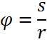 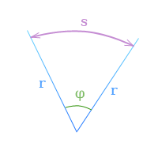 Соотношение между единицами угла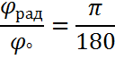
Обратите внимание: Наименование единицы радиан (рад) обычно указывается в формулах только в тех случаях, когда ее можно спутать с градусом. Поскольку радиан равен отношению длин двух отрезков Соотношение между угловой скоростью, угловым перемещением и временем для всех видов движения по окружности наглядно видны на графике угловой скорости (зависимость ω от t). Кроме того, для представления соотношений между названными величинами используют график углового перемещения (зависимость φ от t) и график углового ускорения (зависимость α от t). Число оборотовХарактеристикой всех видов вращения является число оборотов n или равноценная ей характеристика — частота f. Обе величины характеризуют число оборотов в единицу времени. Единица СИ частоты (или числа оборотов) 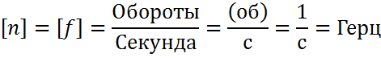 В технике число оборотов обычно измеряется в оборотах в минуту (об/мин) = 1/мин. Таким образом, величина, обратная числу оборотов, есть продолжительность одного оборота. Если Период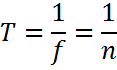 Угловое перемещениеУгловое перемещение равно произведению полного числа оборотов на 2π: 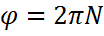 Угловая скоростьИз формулы для одного оборота следует: 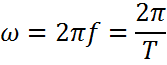 Обратите внимание: Равномерное движение тела по окружностиГоворят, что тело движется по окружности равномерно, если его угловая скорость постоянна, т.е. тело за равные промежутки времени поворачивается на один и тот же угол. 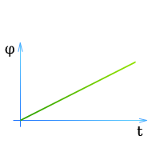 ω — угловая скорость (постоянная в течение времени t) Поскольку на графике угловой скорости площадь прямоугольника соответствует угловому перемещению, имеем: 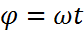 или Постоянная угловая скорость — есть отношение углового перемещения (угла поворота) ко времени, затраченному на это перемещение. Единица СИ угловой скорости: 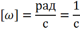 Равномерно ускоренное движение по окружности без начальной угловой скоростиТело начинает двигаться из состояния покоя, и его угловая скорость равномерно возрастает. 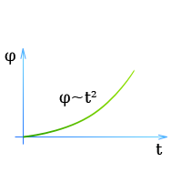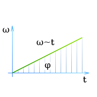 ω — мгновенная угловая скорость тела в момент времени t Поскольку на графике скорости угловое перемещение равно площади треугольника, имеем: 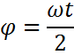 Или 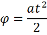 Поскольку вращение тела начинается из состояния покоя, изменение угловой скорости Δω равно достигнутой в результате ускорения угловой скорости ω. Поэтому формула принимает следующий вид: 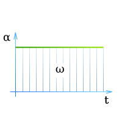 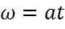 или 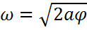 Равномерно ускоренное движение по окружности с начальной угловой скоростьюНачальная скорость тела, равная ω0 в момент t = 0, изменяется равномерно на величину Δω. (Угловое ускорение при этом постоянно.) 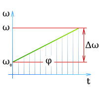 ω0 — начальная угловая скорость Поскольку на графике скорости угловое перемещение соответствует площади трапеции под кривой скорости, имеем: 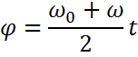 Так как площадь трапеции равна сумме площадей образующих ее треугольника и прямоугольника, получаем: 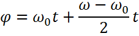 откуда 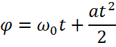 Далее из графика скорости следует 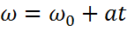 Совместив формулы мы получим 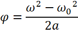 После преобразования получаем выражение, не содержащее времени: 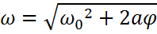 Неравномерно ускоренное движение тела по окружностиДвижение тела по окружности будет неравномерно ускоренным, если изменение угловой скорости происходит не пропорционально времени, т. е. если угловое ускорение не остается постоянным. В этом случае и угловая скорость и угловое ускорение являются функциями времени. Связь величин φ, ω и α представлена на соответствующих графиках. 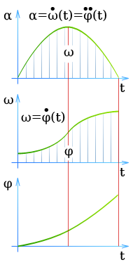 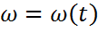 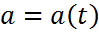 Мгновенная угловая скорость
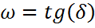 или 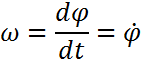 Мгновенной угловой скоростью называется первая производная функции φ = φ(t) по времени. Обратите внимание: Из формул следует: Проинтегрировав обе части выражения, получим 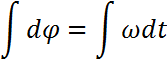 Угловое перемещение есть интеграл по времени от угловой скорости. 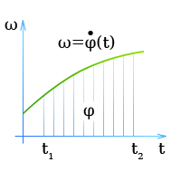 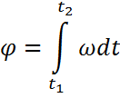 Обратите внимание: Средняя угловая скорость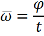 Средняя угловая скорость для некоторого интервала времени 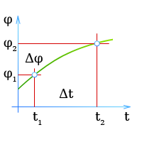 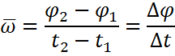 Среднее число оборотов определяется аналогично формуле: 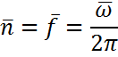 Вращательное движение тела, формулы
Кроме того, эти величины связаны определенным образом с угловым перемещением φ, угловой скоростью ω и угловым ускорением α.
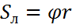 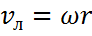 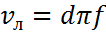 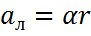 Примечание:Формулы справедливы для постоянных, мгновенных и средних величин, во всех случаях движения тела по окружности. Векторные величины, характеризующие вращательное движение тела
Определение:Если тело участвует одновременно в нескольких вращательных движениях, то результирующая угловая скорость определяется по правилу векторного (геометрического) сложения: 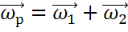 Величина результирующей угловой скорости определяется по аналогии с формулой (Сложение движений): 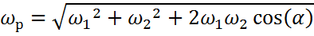 или, если оси вращения перпендикулярны друг другу 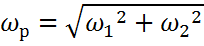 Примечание: Результирующее угловое ускорение определяется аналогичным образом. Графически результирующую можно найти как диагональ параллелограмма скоростей или ускорений. |
 Поэтому графику можно определить, какой угловой скоростью обладает тело в тот или иной момент времени и на какой угол с момента начала движения оно повернулось (он характеризуется площадью под кривой).
Поэтому графику можно определить, какой угловой скоростью обладает тело в тот или иной момент времени и на какой угол с момента начала движения оно повернулось (он характеризуется площадью под кривой).